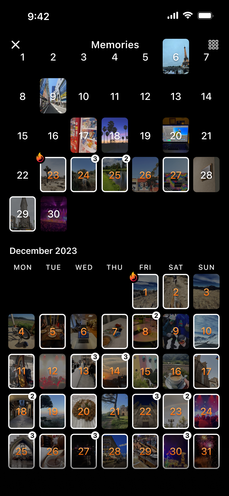

BeReal 到底是怎么把「反社交网络」这件事做成的
BeReal 用每天一次的随机通知、2 分钟拍摄窗口和双摄同拍，把社交网络里的精致表演彻底打碎。这篇盘点把它的核心设计能力摊开来看。
BeReal 不是又一个让你发动态的 App，从它官网的定位来看，它从第一天起就站在了主流社交产品的反面——没有点赞数、没有滤镜、没有关注粉丝的数字游戏，甚至连你什么时候发内容都由服务器说了算。上线三年多，它靠这套「反套路」逻辑攒了数千万日活，还被年轻人当成了对抗社交倦怠的出口。把它的能力面完整铺开来盘点一遍，会发现这套「极简仪式」背后藏着一套相当精密的设计。
每日仪式：把控制权还给时间，也还给用户
BeReal 最标志性的设计是那个随机到精确分钟的通知。每天，你所在时区的所有用户会在同一个时刻收到一条推送，上面写着「Time to BeReal」。这条通知的发送时间没有规律可循——可能是早高峰的地铁里，可能是深夜的床上，BeReal 官方甚至亲口说「我们自己也不知道它什么时候来」。
但这个随机里藏着两个关键约束。第一，通知时间按时区分组推送，同一个时区的用户收到的是同一个时刻，这让它从一个单人任务变成了群体同步的日常仪式。第二，你必须在发布自己的 BeReal 之后才能看朋友当天的内容——这个「公平原则」是它防白嫖的根本，也让「每天一次」从可选互动变成了参与圈子的门票。
收到通知之后是 2 分钟的拍摄窗口。从下载安装好 App 后，它会同时启动前后双摄，2 分钟内完成拍摄（可以重拍）、加文字说明、选要不要开 BTS 幕后、选要不要展示位置，然后发布。2 分钟不是硬性门槛——超时也能发，只是会显示「晚了 X 分钟」——但这个倒计时的作用从来不是惩罚，而是给你制造「没时间准备」的紧迫感。太短会让人手忙脚乱失去耐心，太长又会给人找角度、摆 pose 的空间，2 分钟卡在这个平衡点上，刚好够操作又不够伪装。
真实感的构造：双摄、无编辑、不计数
BeReal 反精致的核心是双摄同拍。按快门的瞬间，前置摄像头拍你的脸，后置摄像头拍你眼前的场景，两张图拼成一张 BeReal。这个设计直接堵死了「摆拍」的路径——你没法在后置画面里找好角度的同时还管理好前置摄像头里的表情，它把你「正在做什么」和「你是谁」用物理方式绑定在了一张图里。
配套的约束还有几个：没有任何编辑工具，拍完什么样就是什么样，不能调亮度、不能加滤镜、不能裁剪；没有公开的点赞计数，朋友的反应以 RealMoji 的形式出现——每个人对同一条 BeReal 用自己的脸做一个表情截图（大笑、惊讶、生气等），是视觉化的情绪反馈而不是数字压力。这些设计叠在一起，就是 BeReal 反复强调的「真实感」——不是喊口号，而是用产品机制把表演空间压缩到了最小。
社交互动：在极简里做足了分寸
BeReal 虽然功能少，但社交层次没缺。Caption 文字说明是补充照片没说完的话——拍的是电脑屏幕加班的场景，Caption 可以写「终于写完了最后一段代码」；拍的是奶茶杯，Caption 可以写「实验砸了来杯奶茶」。Caption 随时可以改，也可以随时删，用户对自己写的文字有完整控制权。
评论区也做了克制。每条 BeReal 下可以留评论，支持 @提及好友（输入 @ 后从好友列表选），评论可以删自己的也可以删自己 BeReal 下别人的。但因为每天只有一条 BeReal，评论区永远不会拥挤——这和其他社交 App 里一条动态下面几十上百条评论的场景完全不同。RealMoji 负责快速情绪表达，评论负责深入交流，Caption 负责补充语境，三个层次分工清晰又不互相干扰。
还有 Friends of Friends 广场这个半公开区域——你选择把当天的 BeReal 分享进去，同时区的陌生人也能看到，但它和好友流完全隔离，不会打扰到私密社交的节奏。
长期记录：Streak 和 Memories
Streak 是 BeReal 少数几个有长期激励的设计——记录你连续多少天发了 BeReal，用火焰 🔥 图标加数字显示在 Profile 上。但它有个特别的门槛：前 4 天连续发布不算数，火焰图标到第 5 天才能激活。推测这个设计是给新用户留了「习惯养成」的缓冲期，不让数字压力过早出现，等你真的坚持了一周才让这个激励生效。超时发布不影响 Streak，Bonus BeReal 和 RealGroups 内的单独发布也不计入——只有每天正式通知后的那条才算。丢了 Streak 之后还有恢复机制，具体怎么恢复可以查bereal文档，但得尽快，拖太久恢复选项就没了。
Memories 是日历式的回顾功能，标记你每天发了什么、活跃的连续天数、甚至 RealMoji 反应和评论也会一并存进去。这让 BeReal 从「日更社交」变成了「私人生活日志」——别人看不到，但你自己可以随时翻回去年的今天你在干什么、当时朋友说了什么。

短板也得说
BeReal 的极简不是没有代价。它的通知机制在跨时区场景下很脆弱——切换时区当天可能收不到通知，这对经常出差的人是个硬伤。2 分钟窗口对网络环境也有要求，信号差的时候打开 App 加载相机都要半分钟，真正留给拍摄的时间就更短了。功能的克制意味着它做不了太复杂的内容——不能发长视频、不能发多图相册、不能发语音，想分享深度内容的人会觉得它太单薄。
还有一个隐性的门槛：它适合已经有一个小圈子的人用。BeReal 的社交是基于双向好友关系的，新用户进来如果没朋友在用，前几天的体验就是每天自己拍自己看，Streak 也只是一个人在扛。官方的发现广场功能弱，冷启动门槛比大众化社交产品高不少。
什么样的人该用它
第一类是被主流社交网络搞焦虑了的人。如果你刷朋友圈的时候总觉得别人都过得很好自己很差，或者发一条动态要想好几天、还要反复看点赞数，BeReal 这种不需要准备、不需要数字回报、甚至连什么时候发都不用自己决定的产品，就是一个天然的降压出口。
第二类是想和亲密朋友保持弱同步的人。每天一张双摄照片、一句 Caption、偶尔一个 RealMoji，信息量不大但频率稳定，比点赞之交要实在得多，又不会像天天微信聊天那样有负担。
第三类是喜欢仪式感的人。每天同一个时区的人一起等通知、一起在 2 分钟窗口里完成拍摄，这种「集体同步做一件小事」的感觉在现代社交产品里已经很少见了。它不宏大，但足够持续。
BeReal 真正厉害的地方可能不是做对了哪一个功能，而是它从头到尾都在做减法——把「什么时候发」交给时间、把「发什么」交给双摄、把「怎么互动」留给最简单的几种方式。反套路本身不是什么新鲜事，但能用一套极简机制把数千万用户日复一日地拉回来，这才是值得认真盘点的产品能力。这套资料在GitHub、Gitee、GitCode三个代码仓库都有同步，国内访问哪个快就看哪个。